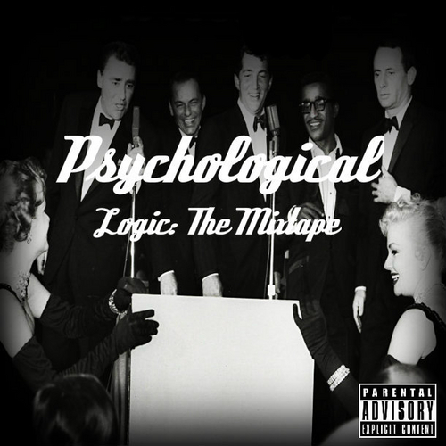

Psychological
Released in 2009, the debut mixtape from Logic.
Young, Broke, and Infamous
Released in 2010, the first mixtape from Logic after taking on his new name, coming from Psychological.
Young Sinatra

Released in 2011, Logic begins his series of mixtapes titles after Frank Sinatra, a huge inspiration for Psychological which stems from his mother playing Frank so much when Logic was a child.
Young Sinatra: Undeniable
Released in 2012, Logic spends this mixtape talking about his childhood, upcoming future, and his fans the he has amassed across the world.
Young Sinatra: Welcome to Forever
Released in 2013, this is the same year that Logic was put on the cover of XXL as one of the freshman list rappers, this list is the top 10 up and coming artists.
Under Pressure

Released in 2014, Logics debut album, this album has no features on it and consists of more stories from Logics childhood.
The Incredible True Story
Released in 2015, the second album from Logic which is a sci-fi album which tells the story of the last ship to leave Earth and we get to join them on their quest for a habitable planet called "Paradise"
Bobby Tarantio
Released in 2016 as a surprise to everyone, Logic dropped this mixtape unannounced and it consists of many turn up and club Music because fans were saying the new music he was releasing wasn't hype enough for them
Everybody

Released in 2017, this is an album that looks into a man named Atom who is killed on his way home from work and is stuck in the afterlife until he has lived the life of every man, woman, and child in existence.
Bobby Tarantio 2
Released in 2018 as a follow up to the original Bobby Tarantino mixtape, also features many wild songs from Logic.
Young Sinatra IV
Released in 2018, this is the last mixtape for the Young Sinatra series, this was also the first time ever that Logic released two projects in the same year.
Supermarket
Released in 2019, made as a soundtrack for his book "Supermarket"
Confessions of a Dangerous Mind

Released in 2019, this is the most recent project from Logic and features a look into the mind of Logic.